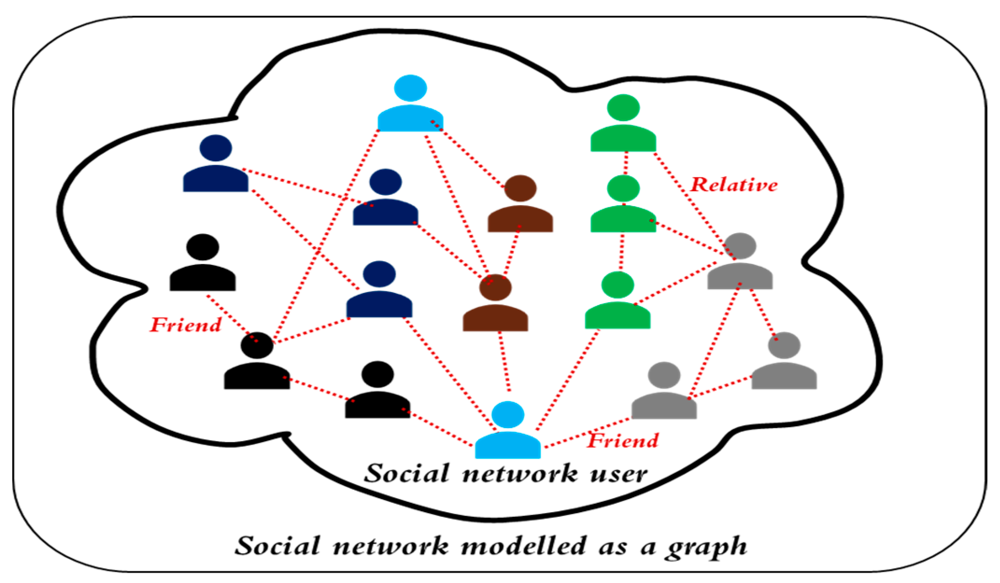
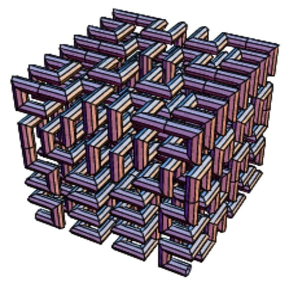
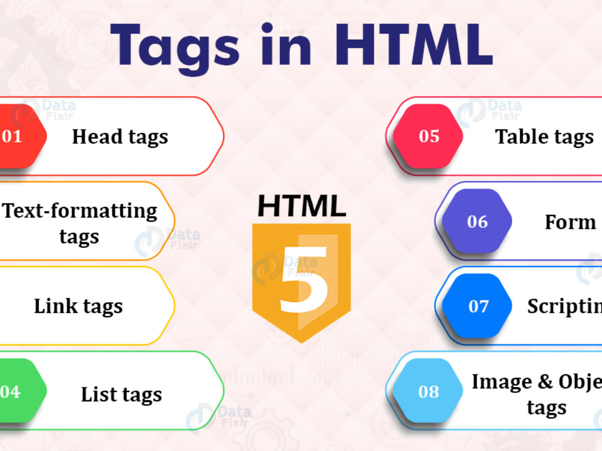

Since I was 12 I have always been fascinated with technology. I began learning to code .lua at 15 years old for a game called Garrys Mod. In Highschool, I learned C# and got certified in Microsoft SDF fundamentals, and took off from there. I am currently finishing my bachelor's in Computer Science Engineering at USF Tampa.
My Proficiency lies in:
C++, C, JAVA, and a bit of python.
Object-Oriented Programming, Functional Programming concepts
Data Structures, Complext data types and functions
I taught myself basic web development through the python Django framework. From there I have helped host websites for friends and potential business partners. I have outstanding communication skills and work excellently in a team setting as well as bonding with anyone.
I wake up every day with a burning desire to learn and grow constantly for the rest of my life. I can't help but visualize that Programming technology
is incorporated in almost everything we do every day.

In this code I implemented classes capable of encoding and decoding messages according to the Vigenere cipher. If you are not familair with what a Vigenere cipher is,@here is a description of it.

I learned about data structure and data calibration through the use of graphical trees. Networks can structure their data in graphical user interfaces or graphs with nodes.
The node of a graph can represent a user and the edge or line between them represents their relationship. This is how many social media platforms structure their applications.
In this particular program, the algorithm finds a group of nodes in a graph that are connected(in their own category). Based on their structure in a graph a group of nodes
can all have something in common. In this case the nodes are "neighbors of one another". In a real world application, a group of "strongly connected componets"
can be grouped for any reason. The directions of how a strongly connected componet is created is described @here in this pdf. The relatives in the
picture above are a great example for what a strongly connected component is. This program returns the "vertices" or nodes that are associated with their respected strongly connected component group.
for example if there are 8 nodes in a graph. The nodes in order would number 1, 2, 3, 4 .. 8. The nodes grouped together would go in their respective SCC order. the first 3 nodes 1, 2, 3 being in group 1 would be 1, 1, 1.
The program returns the the nodes in order to their respective SCC group.

This program creates a continuous fractal space-filling curve that is used in mathematics and graphics.
A series of header files (.h) describe what a Hilbert Curve is as an object of a greater class. The directions of constructing a Hilbert-Curve
are conveyed in a series of linked lists where each Node has a different instruction on what fractal to print at what dimension of the BMP file being created.

Here I have self taught myself how to use the Django web framework for creating web apps and CRMs.

This program essentially creates a .WAV file from a list of notes that the user provides.
Though the notes must be formatted where the first line is the BPM for example set at "120" BPM.
The second line is a paragraph of the notes. Lets say the first word is "Eb3e."
The first letter "Eb" represents the note itself E-flat, the second number is 3 which represents the octave,
the last letter e represents the duration of the sound and the "." represents and exra pause before the next note.

This program detects and deletes any HTML tags from an index.html and then formats the headers and bodys of the website.